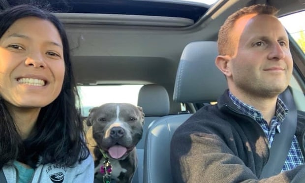
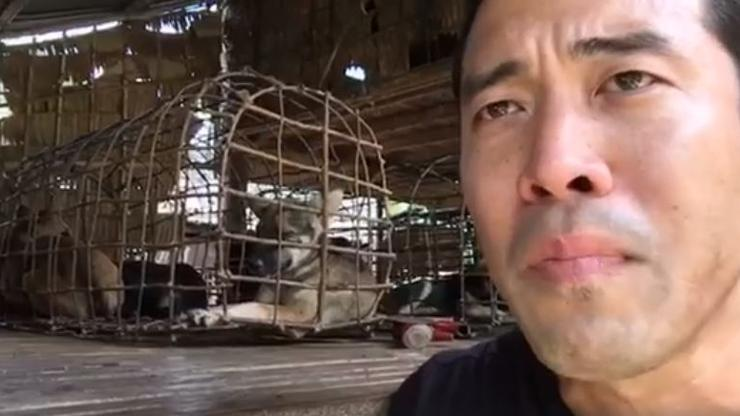
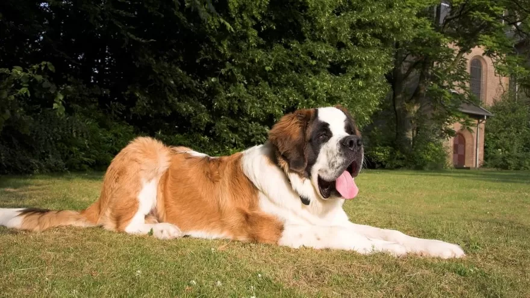

Novosti

Udomila sam psa na današnji dan prije godinu dana
Nikad nisam trebala imati ljubimca. Moj Zaručnik i ja smo oboje veliki ljubitelji pasa. Više..

Muškarac sklonio 300 pasa od Delta uragana u Meksiku
Objava na internetu je prikazivala fotografije onoga što je izgledalo kao tepih u njegovom hodniku. Više..

Jeli ovaj pas opasan? Skloništa se bore s testovima života ili smrti.
Pas, mješavina retrivara krem boje, nedavno je napravio test ponašanja u skloništu za životinje. Pao je. Više..

Spašavanje pasa iz kineskih klaonica. On je izvuako njih 1000.
Početkom tjedna u kineskom gradu Yulin započeo je kontroverzni desetodnevni festival, a aktivisti su ponovno na nogama. Više..

Bernardinac, pas za spašavanje.
Bernardinic su dragi, izuzetno mirni i miroljubivi psi. Ime su dobili po poznatom talijanskom redovniku Bernardu iz Menthona. Više..